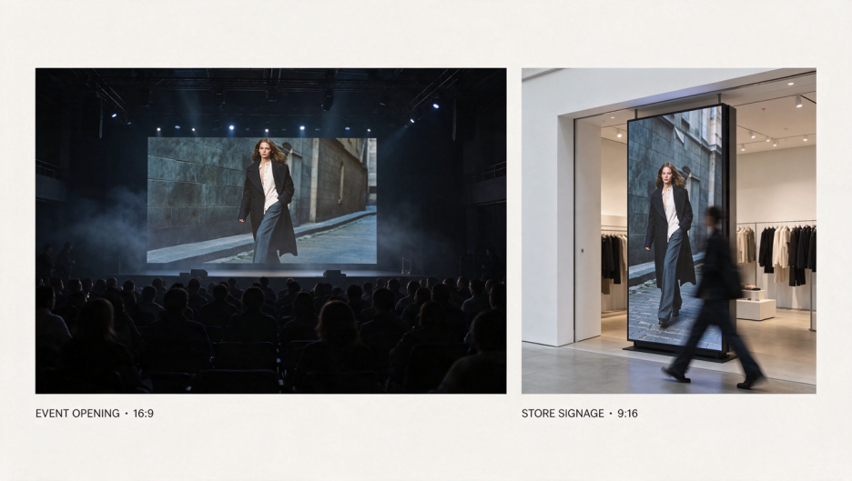
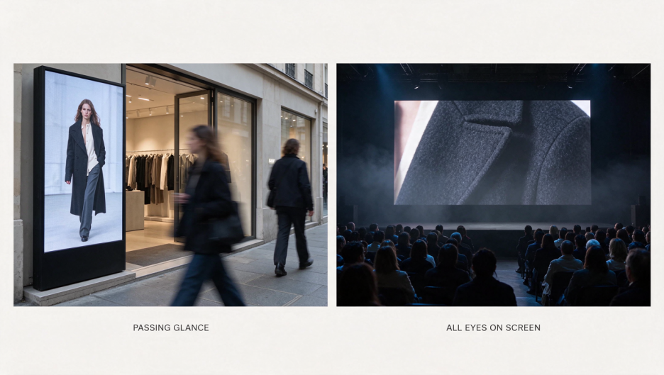
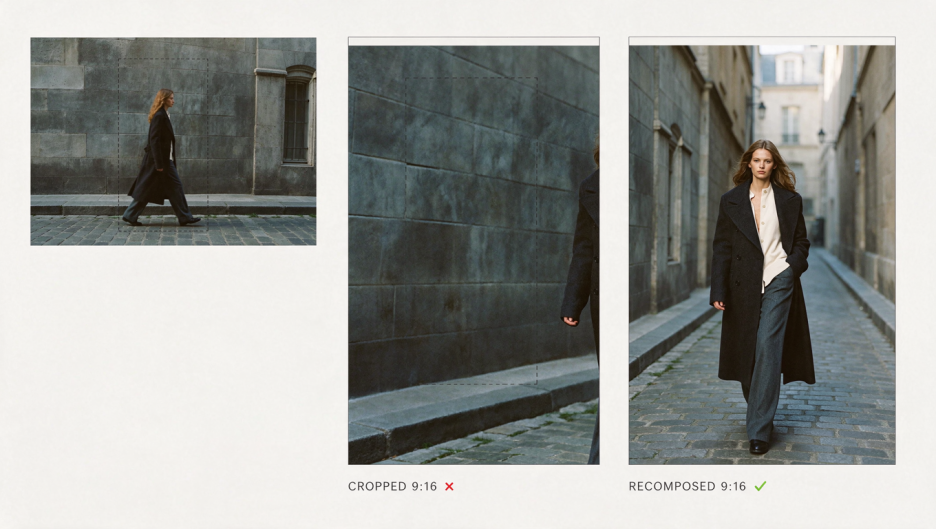
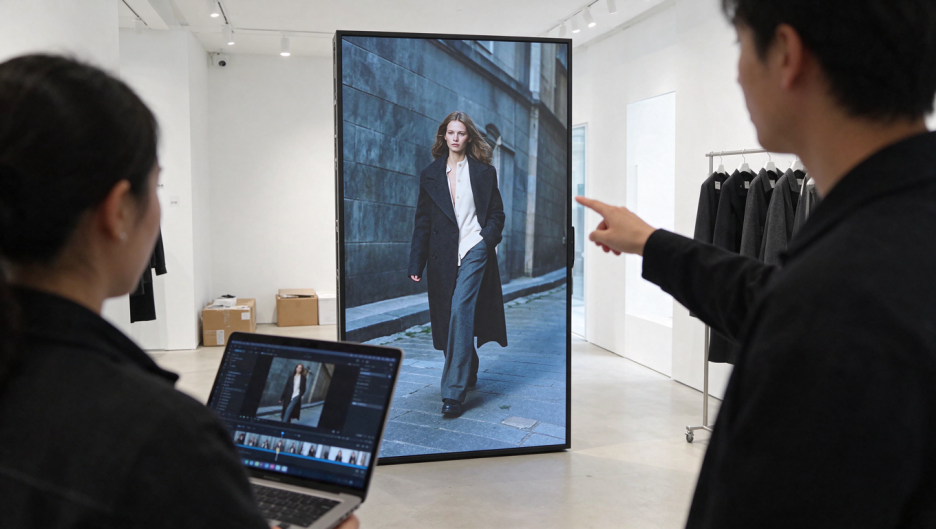

팝업스토어 사이니지 vs 행사 오프닝 영상, 같은 재킷인데 왜 두 편이 필요할까?
글 Kris W (감우식) ·
팝업스토어 사이니지는 어느 장면에서 봐도 제품이 보여야 하고, 행사 오프닝 영상은 첫 장면부터 공개 순간까지 관객의 시선을 이끌어야 합니다.

팝업 입구에도, 오프닝 행사에도 같은 영상을 틀면 안 되나요?
팝업스토어와 런칭 행사를 함께 준비하는 브랜드 담당자분들이 자주 하시는 질문입니다. 같은 시즌, 같은 재킷을 보여주는 영상이니 한 편이면 충분해 보입니다. 그런데 막상 현장에 걸어 보면 결과가 달라집니다.
입구에서는 손님이 걸어가다 화면을 잠깐 봅니다. 하필 영상의 중간을 봤는데, 화면에는 풍경만 나오고 재킷은 몇 초 뒤에야 등장합니다. 그 사이 손님은 이미 지나갔습니다.
반대로 행사장에서는 진행자가 무대에 오르기 전, 모든 관객의 시선이 화면에 모입니다. 이때 첫 장면부터 재킷을 다 보여주면 기대감이 생길 틈이 없습니다. 원단의 움직임이나 실루엣으로 궁금증을 만든 뒤, 마지막에 첫 착장을 공개하는 편이 훨씬 강렬합니다.
음악으로 비유하면 쉽습니다. 매장 BGM은 손님이 언제 들어와도 어색하지 않아야 하고, 패션쇼 음악은 첫 모델 등장부터 피날레까지 흐름이 설계되어 있습니다. 같은 브랜드라도 매장 음악과 쇼 음악을 따로 고르는 이유입니다. 영상도 마찬가지입니다.
한눈에 보는 매장 사이니지 vs 행사 오프닝 영상
| 구분 | 팝업스토어·매장 사이니지 | 행사 오프닝 영상 |
|---|---|---|
| 관객이 보는 방식 | 지나가며 중간부터 잠깐 | 정해진 시점에 모두 함께 |
| 장면 구성 | 대표 제품·브랜드가 곳곳에서 보이게 | 첫 장면 → 공개 장면까지 하나의 흐름 |
| 첫 장면의 역할 | 어디서 봐도 읽히는 것이 우선 | 시선을 모으는 결정적 장면 |
| 소리 | 무음 재생 기준 | 현장 음향과 장면 동기화 |
| 반복 | 끝과 시작이 자연스럽게 이어져야 | 1회 재생, 끝난 뒤 무대 전환까지 설계 |
| 납품 기준일 | 매장 오픈 전 설치일 | 리허설·송출 테스트일 |
이 차이를 먼저 정하면 콘티부터 납품 파일까지 결정이 훨씬 쉬워집니다.
1. 사이니지는 '어느 장면에서 봐도', 오프닝은 '첫 장면부터 끝까지'
매장 사이니지 영상의 핵심은 중간부터 봐도 읽히는 것입니다. 대표 제품과 브랜드가 영상 곳곳에서 보이도록 배치하고, 소리 없이 재생되어도 화면만으로 이해되는지 확인합니다. 반복 재생이 기본이라 마지막 장면이 첫 장면으로 자연스럽게 이어지는지도 봅니다.
행사 오프닝 영상의 핵심은 하나의 흐름입니다. 첫 장면에서 시선을 모으고, 공개할 제품이나 메시지까지 긴장을 쌓습니다. 현장 음향을 쓸 수 있다면 음악과 효과음을 장면에 맞추고, 영상이 끝난 뒤 조명 전환이나 진행자 등장으로 어떻게 이어지는지까지 함께 설계합니다.
패션 디렉팅에서는 이 차이가 '무엇을 먼저 보여줄지'로 이어집니다.
· 매장 입구: 재킷의 전체 실루엣을 먼저 보여주고, 시선이 조금 더 머물면 소재가 읽히도록
· 행사 오프닝: 원단 디테일에서 시작해, 움직임을 따라 전신이 드러나도록
대행사 PM이나 브랜드 VMD 담당자가 내부 보고를 할 때도 이렇게 한 문장으로 정리할 수 있습니다.
입구에서는 멀리서도 대표 착장이 보이게 하고, 오프닝에서는 첫 착장 공개 타이밍에 맞춰 영상과 음악을 끝냅니다.

2. 화면 규격은 콘티를 그리기 전에 확인합니다
가로 영상에서 모델이 왼쪽부터 오른쪽까지 걷는 장면을 떠올려 보세요. 이 영상을 좁은 기둥형 LED에 맞춰 가운데만 잘라내면, 모델이 몇 초 동안 화면 밖에 있게 됩니다.
처음부터 그 화면을 기준으로 만들었다면 이야기가 달라집니다. 카메라를 향해 걸어오는 동선을 쓰거나, 전신과 소재 디테일을 번갈아 보여주는 구성을 선택할 수 있습니다. 같은 장면도 화면에 맞춰 다시 설계하는 것과 나중에 잘라내는 것은 결과가 완전히 다릅니다.

화면이 여러 면으로 나뉘는 LED라면 인물 얼굴이나 로고가 경계에 걸리지 않는지도 콘티 단계에서 반영합니다. 가로형과 세로형을 함께 쓸 계획이라면, 어떤 장면을 공유하고 어떤 장면을 매체별로 다시 구성할지 초기에 정하는 편이 좋습니다.
색감도 공간에 따라 다르게 보입니다. 밝은 매장에서는 검은 옷의 주름이 묻힐 수 있고, 어두운 행사장에서는 밝은 화면이 관객에게 지나치게 강하게 느껴질 수 있습니다. 가능하면 실제 화면이나 비슷한 환경에서 옷의 명암, 로고의 가독성, 컷 전환을 미리 확인합니다.
송출 사양, 이것만 확인하면 됩니다
- 화면비와 실제 송출 해상도
- 화면 설치 위치와 관객이 보는 거리
- 분할 화면 여부와 경계 위치
- 재생 장비와 요구 파일 형식
- 소리 송출 가능 여부
운영사에서 받은 송출 사양서가 있다면 그대로 전달만 해주세요. 아직 받지 못하셨다면, 운영 담당자에게 확인할 항목을 GRaY D. Lab이 정리해 드립니다.
3. 오픈일이 정해졌다면, 송출 테스트 날짜부터 잡습니다
행사 영상의 마감일은 오픈일이 아닙니다. 현장에서는 완성 파일을 장비에 올려 재생해 보는 시간이 필요하기 때문입니다.
예를 들어 금요일 오픈, 수요일 송출 테스트가 예정되어 있다면 제작 일정은 금요일이 아니라 수요일을 기준으로 거꾸로 잡습니다.
| 시점 | 할 일 |
|---|---|
| 금요일 | 팝업 오픈·행사 당일 |
| 수요일 | 현장 송출 테스트 ← 제작 일정의 기준일 |
| 화요일까지 | 최종 파일 전달 |
| 그 이전 | 콘셉트·제품 자료·송출 사양 확정 시점을 함께 역산 |
GRaY D. Lab의 제작 기간은 30초 이내 영상 약 2주, 1~2분 영상 약 3주를 기준으로 상담합니다. 기획 범위와 장면 수, 자료와 피드백 일정에 따라 달라지므로, 구체적인 납품일은 송출 테스트일을 기준으로 함께 정합니다.

첫 상담은 세 가지면 충분합니다
행사 영상은 일정이 가장 중요하기 때문에, 시리즈의 다른 글에서 말씀드린 두 가지에 하나만 더 여쭤봅니다.
- 무엇을 보여주고 싶은지 – 대표 제품이나 메시지
- 어디에 쓸 영상인지 – 팝업 입구, 매장 내부, 행사 메인 스크린 등
- 오픈일과 리허설 일정 – 파일 전달 마감일이 정해졌다면 함께
공간 조감도, 시즌 룩북, 제품 사진, 송출 사양서가 있다면 함께 보내주세요. 없어도 상담은 시작할 수 있습니다.
자주 묻는 질문
행사까지 3주가 채 남지 않았는데 상담할 수 있나요?
네. 오픈일과 파일 전달 마감일, 현재 확보된 자료를 알려주시면 그 일정 안에서 가능한 제작 범위를 먼저 검토합니다. 일정이 촉박할수록 빨리 연락 주시는 것이 선택지를 넓히는 방법입니다.
행사 메인 스크린용 가로 영상과 SNS용 세로 영상도 함께 받을 수 있나요?
함께 제작할 수 있습니다. 주 송출 화면을 먼저 정하고, 세로 버전에 필요한 구도와 편집 범위를 확인한 뒤 추가 납품 범위를 안내드립니다.
팝업 인테리어 시안만 있어도 상담할 수 있나요?
네. 공간 조감도나 시즌 룩북을 바탕으로, 고객이 영상을 어디서 보고 어떤 제품을 기억하면 좋을지부터 정리합니다. 그 내용을 바탕으로 콘셉트와 장면 구성, 제작 범위를 함께 협의합니다.
매장 사이니지 영상은 소리가 꼭 필요한가요?
매장 환경에 따라 무음 재생이 많아 화면만으로 이해되도록 만드는 것이 기본입니다. 소리를 쓸 수 있는 공간이라면 매장 음악과 어울리는 사운드를 함께 제안드립니다.
행사 오프닝이라면 관객이 마지막 장면을 본 뒤 무엇을 보게 될지, 매장 사이니지라면 관객이 어느 장면에서 멈춰도 무엇을 알아볼 수 있을지부터 정해 보세요. 그 답이 콘티와 송출 계획의 출발점이 됩니다.
같은 재킷도 매장에서는 BGM처럼, 무대에서는 쇼 음악처럼. 공간에 맞춰 설계된 영상이 브랜드를 더 오래 기억하게 만듭니다.
글 · Kris W (감우식) | GRaY D. Lab 대표, 패션 디자이너 출신 크리에이티브 디렉터
그레이디랩(GRaY D. Lab)은 경기도 고양시 일산동구를 기반으로 AI 패션·광고 영상을 제작하는 스튜디오입니다. 기획·스토리보드·AI 비주얼 생성·편집·마스터링까지 직접 수행합니다.